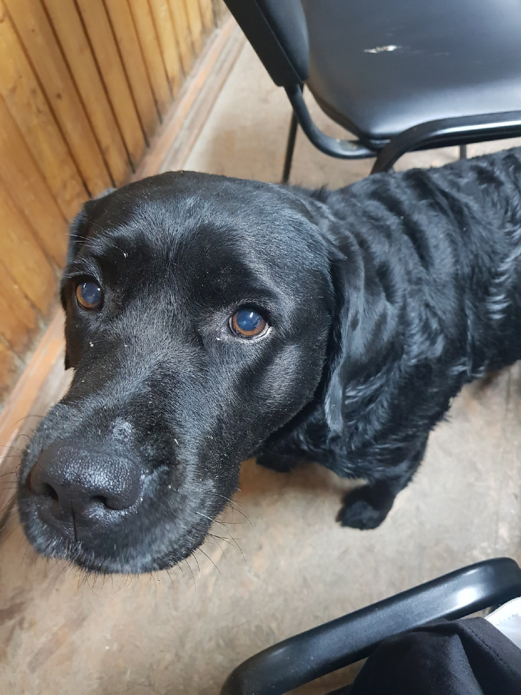

Кто я?

Я студент 3 курса университета ИТМО. Побывал в академическом отпуске, получается, отдохнул.
Обожаю собак, конкретно свою.
Стараюсь развиваться чтобы меня не отчислили как моего первого соседа... И... Второго соседа (пока что в процессе).
Очень люблю кислый мармелад, правда однажды у меня на него случилась аллергическая реакция.
Не могу засыпать без фоновых звуков, они должны быть не громкими, чтобы было лень вслушиваться в смысл.